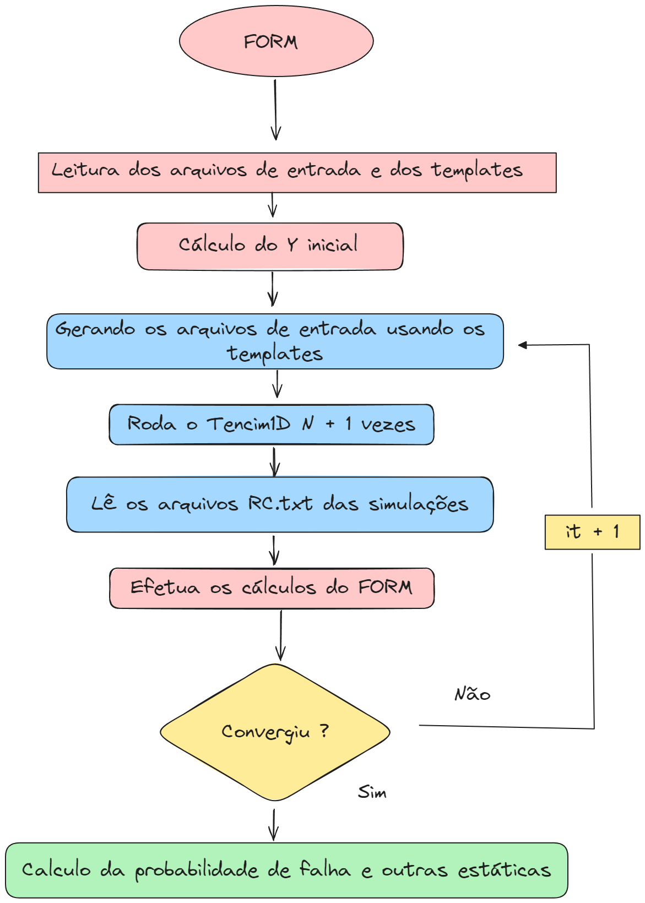
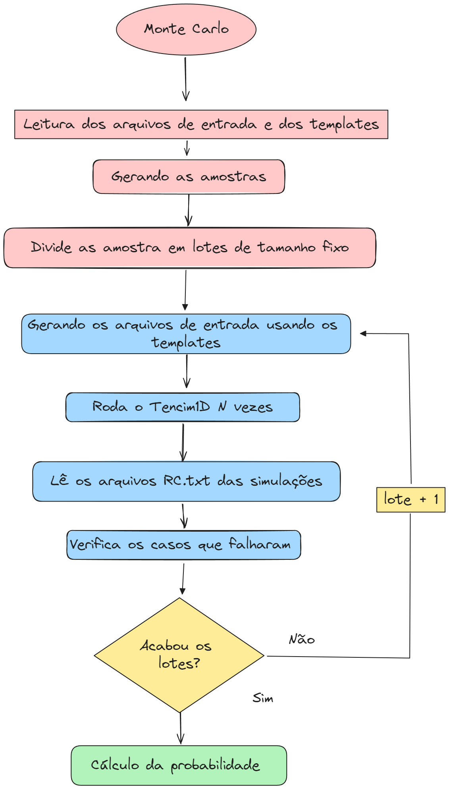

Documentação
Bem-vindo da documentação do confiacim-core. Atualmente o confiam-core esta em sua versão 0.10.0a utilizando o Tencim1D versão 24.03.07.
O confiacim-core é um pacote python com o núcleo de cálculo probabilistico do confiacim. Este pacote disponibiliza uma CLI que permite os cálculos serem feitos de forma standalone. Além disso o pacote pode ser importado por outra aplicações python, como por exemplo uma API web.
Links para as secções da documentação:
Fluxograma do FORM
 Fig1 - Fluxograma do funcionamento do confiacim FORM.
Fluxograma do Monte Carlo
 Fig2 - Fluxograma do funcionamento do confiacim FORM.